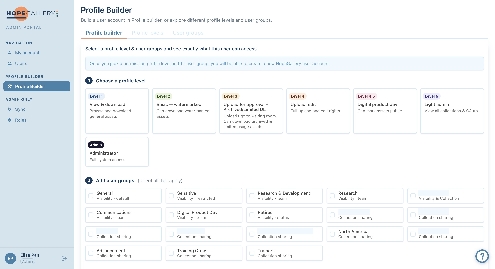
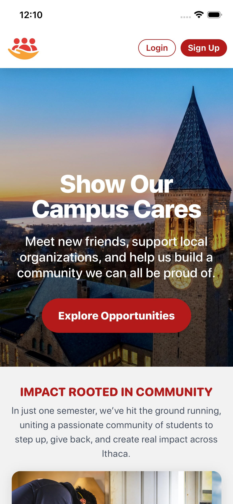
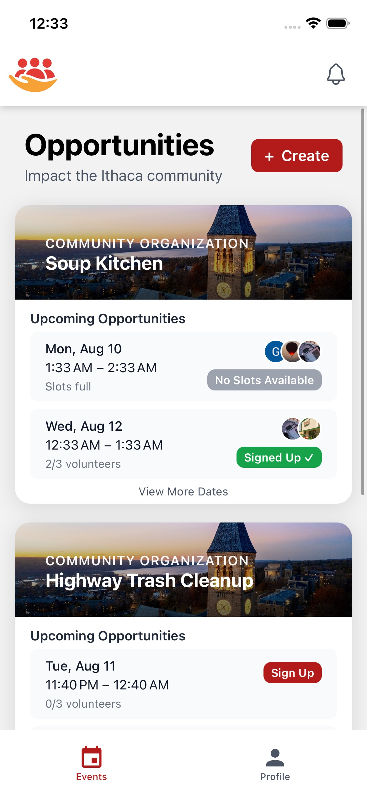

About
I'm a Computer Science student at Cornell University, with minors in Artificial Intelligence and Business. I like turning ambiguous requirements into shipped software — especially projects where I get to own something end to end, from architecture to deployment.
Currently, I've just finished up an internship as an Innovation Intern at OneHope, where I independently designed and built a full-stack internal admin portal syncing 370+ digital-asset-management users, complete with Microsoft SSO and an access-request workflow used directly by directors and IT. I'm also the Lead Mobile Developer at CampusCares, leading our transition from a React + Flask web platform to React Native for a platform serving 400+ users across 50+ campus organizations.
I also teach advanced Python and web development to middle schoolers through Girls Who Code, and outside of work you'll usually find me building something just for fun — a game in Godot, a networked Battleship implementation in OCaml, or whatever course project is due next.
Education
Cornell University, College of Arts and Sciences
B.A. in Computer Science · Minors in Artificial Intelligence & Business
Experience
Innovation Intern · OneHope
- Worked directly under the Director of Innovation to scope a full-stack internal admin portal from an ambiguous starting brief, translating open-ended goals into a concrete technical plan.
- Partnered closely with the Director of Software Development and the Director of Technology Design & Management throughout the build, aligning the portal with existing IT infrastructure, security practices, and support workflows.
- Coordinated requirements, demos, and feedback directly with directors, IT staff, and end users across the organization, and built relationships with employees well beyond my immediate team.
- Owned the project end to end, from initial scoping through documentation and handoff, presenting progress and decisions directly to leadership throughout the internship.
Lead Mobile Developer & Full-Stack Engineer · CampusCares
- Independently leading the mobile app's transition to React Native from the existing React + Flask web platform, driving architecture decisions and ensuring feature parity between web and mobile.
- Wrote 18k+ lines of TypeScript for authentication, navigation, API integration, and dynamic UI components.
- Coordinate with backend and product leads to integrate features for a platform serving 400+ users across 50+ campus organizations, working directly with real users to improve usability.
Instructor, Advanced Track · Girls Who Code
- Taught weekly programming classes (Python, HTML/CSS/JS) to middle school students.
- Mentored students individually, adapting explanations and debugging support to different skill levels.
- Consistently received positive student feedback, with high engagement and retention across weekly sessions.
Projects

Hope Gallery Admin Portal
- Built a full-stack internal portal that syncs and displays 370+ users from the organization's digital-asset platform, with role-scoped views and an access-request workflow.
- Developed a C# background service syncing users from the Bynder REST API (OAuth 2.0) with pagination, scheduled daily refresh, and per-record error isolation.
- Implemented Azure AD SSO (MSAL, JWT validation) with a three-tier role system scoping data visibility and actions per role.


CampusCares Mobile App
Leading the React Native rewrite of a campus-wide platform serving 400+ students across 50+ organizations — 18k+ lines of TypeScript covering authentication, navigation, API integration, and dynamic UI, built for feature parity with the existing React + Flask web app.
Heirs of Ash and Ruin
A narrative-driven game built solo in Godot — event-driven gameplay systems for state management, timers, and entity interactions, with a modular architecture tracking player, enemy, and world state across multi-phase encounters.
Battleship Game
Co-built a multiplayer Battleship game in OCaml with a client–server architecture. Led data-structure and module-interface design so the team could build in parallel; 85%+ test coverage.
Robotics Scouting App
A ~3k-line React web app for collecting and analyzing robotics competition data, used by the team during alliance selection.
Coursework Highlights
10k+ lines across Java, Python, and OCaml, implementing data structures, algorithms, and functional-programming concepts for Cornell's CS core sequence.